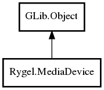

MediaDevice
Object Hierarchy:

Description:
public abstract class MediaDevice : Object
Content:
Properties:
Creation methods:
Methods:
- public void add_interface (
string iface)
Add a network interface the device should listen on.
- public void remove_interface (
string iface)
Remove a previously added network interface from the device.
- public
List<string> get_interfaces ()
Get a list of the network interfaces the device is currently allowed
to use.
Inherited Members:
All known members inherited from class GLib.Object
- @new
- newv
- new_valist
- get_type
- get_class
- @ref
- unref
- ref_sink
- weak_ref
- weak_unref
- add_weak_pointer
- remove_weak_pointer
- @get
- @set
- get_property
- set_property
- get_data
- set_data
- set_data_full
- steal_data
- get_qdata
- set_qdata
- set_qdata_full
- steal_qdata
- freeze_notify
- thaw_notify
- dispose
- constructed
- notify_property
- connect
- disconnect
- add_toggle_ref
- remove_toggle_ref
- bind_property
- notify
- ref_count